Análisis residual: Confirmación de las suposiciones del modelo
Definición
El análisis residual es la herramienta principal para determinar si el modelo de regresión empleado es apropiado.
Como ya se indicó, el residual de la observación i es la diferencia entre el valor observado de la
variable dependiente (yi) y el valor estimado de la variable dependiente (Ŷi)
En otras palabras, el residual i es el error que resulta de usar la ecuación de regresión estimada
para predecir el valor de la variable dependiente.
Residual de la observación i

Ejemplo (Adaptado de: Anderson & Sweeney, 2008)
En la siguiente tabla se muestran la altuna y el peso de varias personas respectivamente
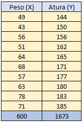
Para realizar el analisis se comienza proponiendo una hipotesis del modelo adecuado de la relación entre las variables dependiente e independiente metodo de minimos cuadrados obtenemos:
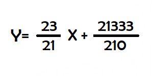
A continuación se revisan las suposiciones de regresión (la ecuación de la recta obtenida) y se halla el residual
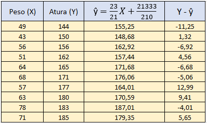
Grafica de residual en función de X
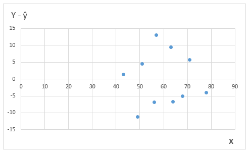
Grafica de residual en función de el valor pronosticado
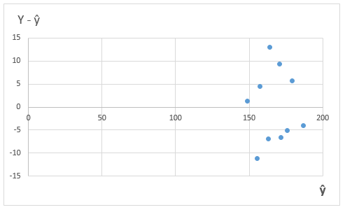
Residuales estandarizados
Para obtener el residual estandarizado sólo es necesario dividir cada residual entre su desviación estándar
Desviación estandar del residual i
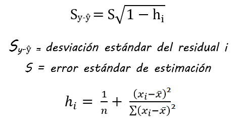
Ahora calculamos la desviación estándar del residual,
para ello debemos tener encuenta que:
1- X barra es el promedio de las X
2- Para hallar el error estandar de estimacion debemos utilizar la prueva de significancia
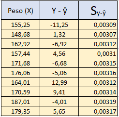
Residual estandarizado de la observación i
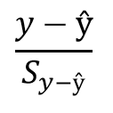
Grafica de residual estandarizado en función de X
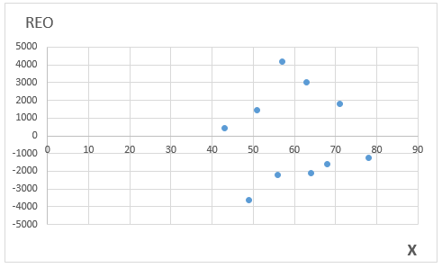
Gráfica de probabilidad normal
Para hallar los puntos normales se toman aleatoriamente 10 valores y se calcula para cada uno de los nuevos valores el residual estandarizado y se ordenan de menor a mayor
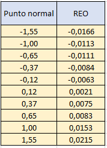
Graficamos y si la suposición fue correcta deberia observarse una linea casi perfecta de 45°
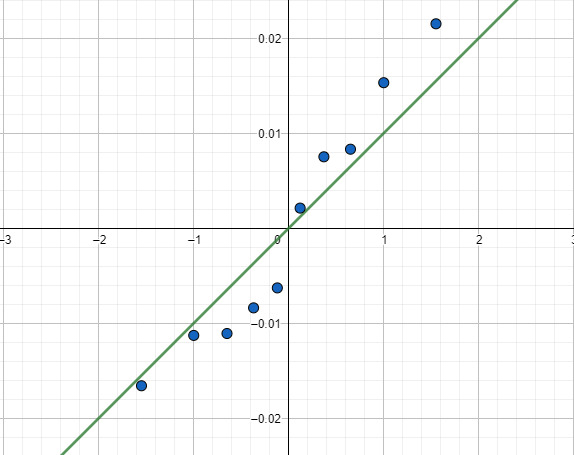